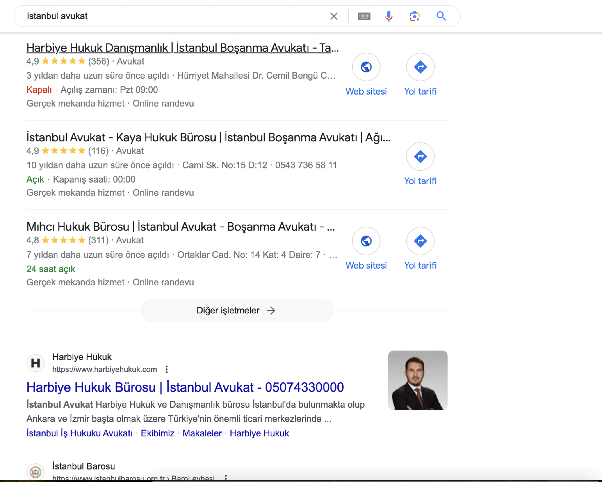
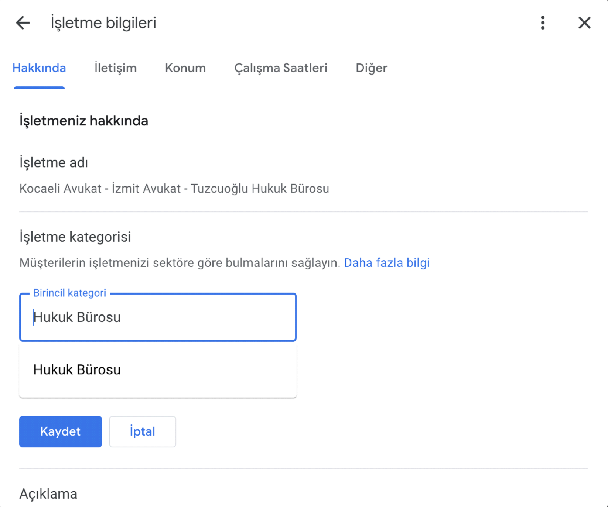
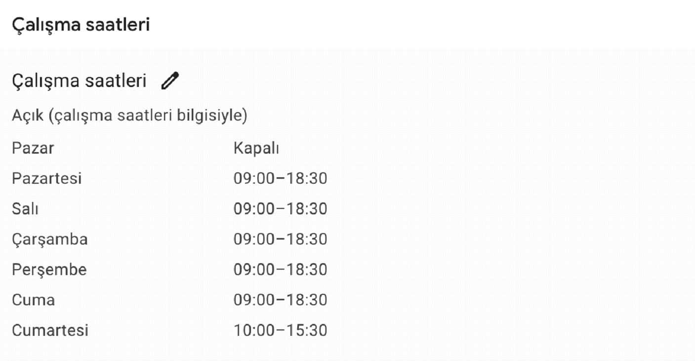
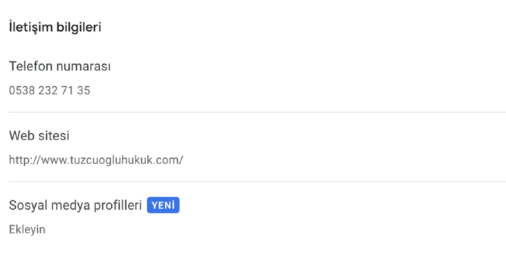
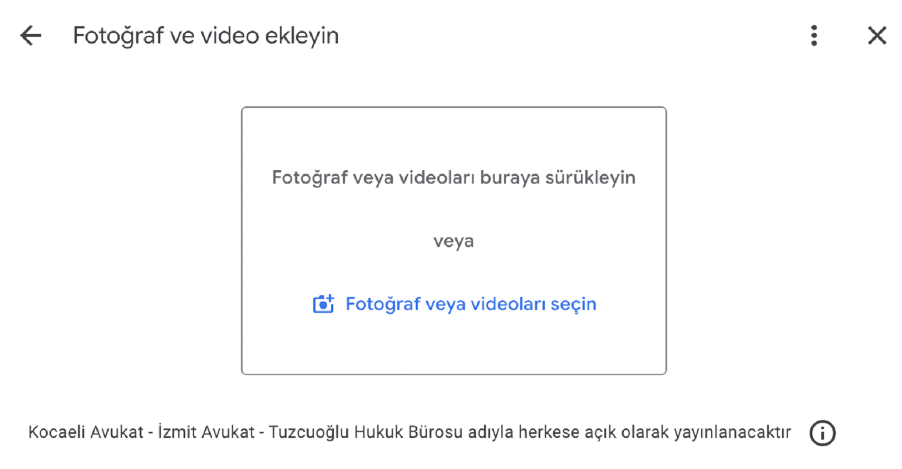
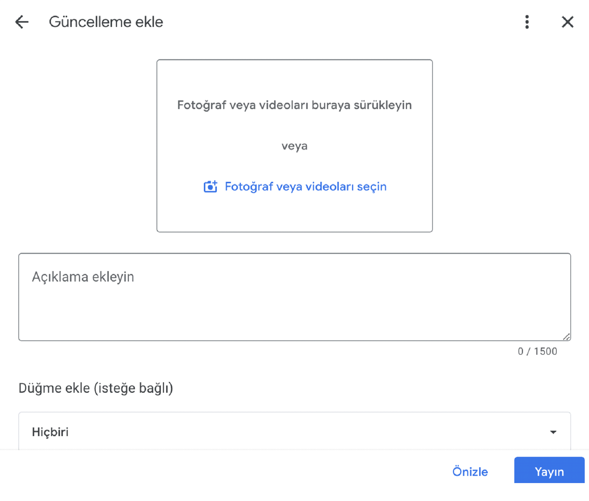
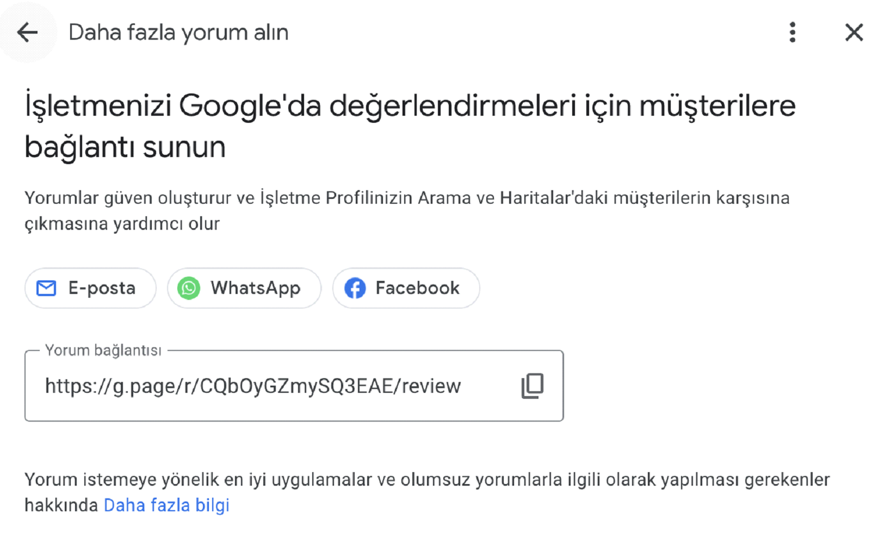
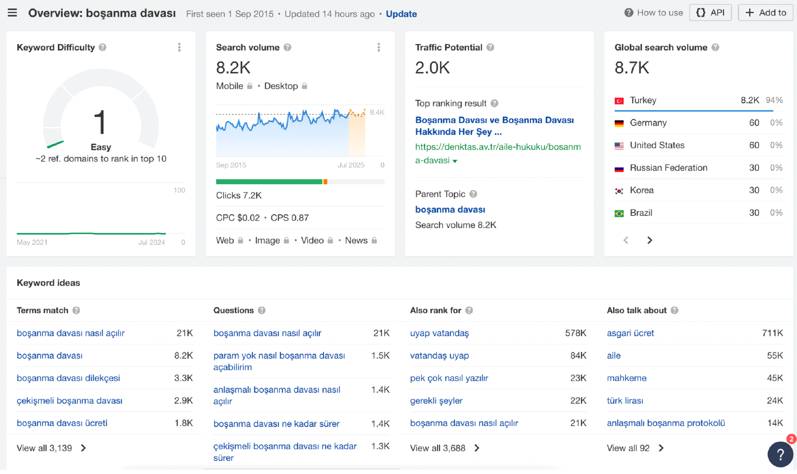
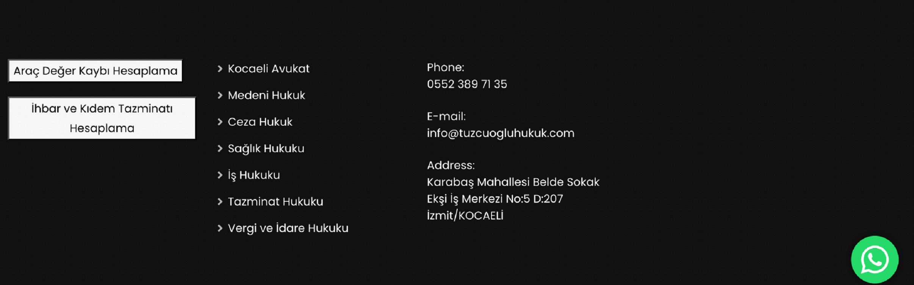
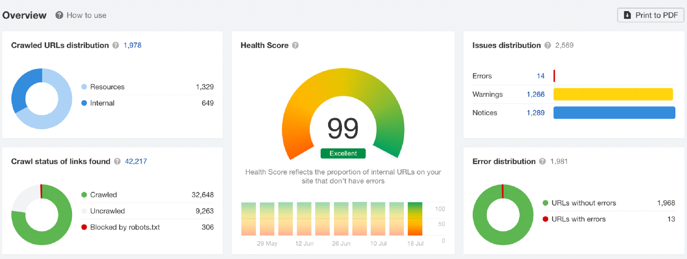

Avukat SEO
SEO, hukuk büroları için en güçlü pazarlama kanallarından biridir. Müşteri portföyünü arttırmak isteyen hukuk büroları, SEO çalışmasına başvurarak organik görünürlüğünü arttırmak isterler.Çünkü iyi sıralamalar iyi sonuçlar, yeni müşteriler ve bilinirlik getirecektir. Avukatlar için oluşturduğumuz SEO Rehberini sizlere sunarken 2 ana faktöre dikkat etmeniz gerekiyor:
- Local SEO ( Google Haritalar)
- General Keyword - Organic SEO iyileştirmeleri.
Avukatlar İçin Local SEO Teknikleri
Potansiyel müşteriyi yakalama konusunda faydalanacağımız kriterlerden biri Google Haritalardır. Bir avukat araması yapıldığında listede ilk sıralarda çıkan ve yorumları organik görünen bir kişi ile çalışmak isteyeceklerini biliyoruz. Google’ın zengin sonuçlarında görünmeniz müşterinin size olan güveninin de artacağının bir parçası olacağını asla unutmayınız!
Görüldüğü üzere “ İstanbul avukat “ sorgusu yapıldığında Organik listeden önce Google Haritalar sonuçlarının görüntülendiğini gözlemlemekteyiz. Haritalarda görünmeniz keşfedilme şansınızı arttıracağını unutmayınız. Harita sıralamaları Alaka ve Mesafeye göre listelenmektedir. Bu ilkelere göre nasıl optimize yapacağınıza dair önerileri belirtiyoruz:
1) İlk defa Google İşletme hesabı açıyorsanız:
https://www.google.com/intl/tr_tr/business/ adresinden kaydınızı açabilirsiniz.
Avukatlar için işletme adınızı belirtirken hizmet verdiğiniz bölgeye veya alana yönelik başlık geçirseniz sıralamanızda ciddi iyileşmenin olacağını söyleyebiliriz.
Örn: Kocaeli Avukat - İzmit Avukat - Tuzcuoğlu Hukuk Bürosu
Örn: Kocaeli Avukat | A&G HUKUK BÜROSU
Örn: Avukat Ayşe Nur Efe Hukuk Bürosu İzmit / Kocaeli
2) İşletme Kategorinizi Seçin!
3) Çalışma Saatinizi Belirleyin!
4) İletişim Bilgilerinizi Giriniz!
5) Fotoğraf Ekleyin!
6) Düzenli Olarak Post Paylaşımı!
Web sitenizdeki blog içeriklerinin yayın linkini ve görselini paylaşarak işletmenizi güncel tutabilirsiniz. Böylece Google’a güçlü sinyaller göndermiş olursunuz.
7) Müşterilerinizden Yorum İsteyin!
Avukatlık danışmanlığınız sürecinde sizlerden memnun kalan müvekillerinizden dava detaylarına girmeden yorum isteyebilirsiniz!
Avukatlar İçin SEO Çalışması
Google haritalar iyileştirmeleri yaptıktan sonra web sitemizin Google sonuçlarındaki görünürlüğünü arttırmak için uygulayacağımız aşamalara geçmek istiyoruz. Temel düzeyden gelişmiş düzeye kadar tüm detayları sizlerle paylaşmak istiyoruz.
Temel Seviye Geliştirmeler:
- Sitenizi Search Console’ a kaydedin!
- Site haritasını Google’ a gönder!
- Siteniz hazır CMS altyapılarından biri olan Wordpress ise SEO eklentisi kur!
İleri Seviye Geliştirmeler:
Hukuk büroları için ileri düzey SEO geliştirmeleri içerik merkezli geliştirmelerden ibaret olacaktır. Yüksek görünürlük ve fazla kitleye erişebilmek için Hukuki alanlarda makaleler oluşturmak ve hizmet alanlarınıza yönelik sayfaların açılması gerektiğini unutmamak gerekiyor.
1) Anahtar Kelime Araştırması:
Hukuk büroları için içerik çok önemlidir. Dava türleri, dilekçe örnekleri vs. birçok konuda içeriklerin üretilmesi gerekmektedir. Bu içerikleri oluştururken SEO ajansından profesyonel destek alınmasında fayda vardır. Örnekleme ile gidecek olursak
Kelime: Boşanma Davası
SEO ajansının sizlere vereceği briefler doğrultusunda içerikte değinmeniz gereken konu bütünlüğüne kadar tüm detayları erişmiş olursunuz. Anahtar kelime araştırması sonucunda oluşturduğumuz örnek bir brief: Link
Sizlerin de kelime araştırması için kullanabileceği araçları listeliyorum:
- Google Keyword Planner
- keywordtool.io
- Semrush
- Neil Patel
- Zutrix
2) Rakiplerinizin trafik çektiği sayfalara odaklanın!
Hukuk büroları birbirleriyle rekabet halinde oldukları için
rakiplerinizin trafik çektiği içerik türlerini inceleyerek kendi
sitenize benzer içerikleri üreterek organik trafik yakalamaya
başlayabilirsiniz. Bu konuda SEO araçlarından yararlanabilirsiniz
örneklem üzerinden gidecek olursak
Ahrefs >>> Top Pages sekmesiyle rakibimizin en çok
trafik aldığı sayfaları saniyeler içinde görebiliriz.
Örnek: barandogan.av.tr
3) Şirket konumlarınızı sitenin alt bölümüne ekleyin
Sitenizin footer alanına şirket konumunuzu yazılı şekilde ekleyin. Google avukat arama eğilimlerinde yakın bölge seçimlerine önem göstereceği için SERP’ te size yer vermeye özen gösterecektir
Örnek: tuzcuogluhukuk.com adresinin Footer bölümünden bir kare.
4) EEAT yönergelerine uygun bir web sitesi oluşturun:
EEAT kavramı kısaca web sitenin:
- Deneyim
- Uzmanlık
- Otorite
- Güvenilirlik
- Sitedeki tüm avukatların yazar profili.
- Avukatların sosyal medya hesaplarının linkleri.
- Sahip olduğunuz başarılar,ödüller veya eğitim sertifikalarının sitede gösterilmesi.
- Yazılan içerikleri belli kaynaklara dayandırarak uzmanlığınızın gösterilmesi.
- İlgili kaynaklardan backlink alımları yaparak otoritenin gösterilmesi ( Güvenilirlik derecesi)
- Schema işaretlemeleri kullanmak. (Article vb.)
- İçerik güncelliği.
5) Outreach Çalışması
EEAT kavramında sitenizin güvenirliğini ve otoritesini arttırmak için sinyal aldığı nüanslardan biri backlinktir. Backlink A sitesinden B sitesine verilen linke denmektedir. Backlink hakkında daha detaylı bilgiye sahip olmak için Backlink Nedir ? içeriğimize göz atabilirsiniz.
Avukatların reklam çalışması yasak olduğundan ötürü backlink aşamasında izlemesi gereken yöntemler:
- Haber sitelerinde köşe yazarlığı yaparak hukuk bürosunun linkini yazar profilinde paylaşması.
- Hukuk forumlarında bilgi alışverişleri sağlayarak yazar profiline bürosunun linkini vererek.
- Sizlerle aynı konularla veya benzer konularda içerik üreten sitelerden basın bülteni yayınlayabilirsiniz.
6) Sitenize ekleyeceğiniz görsellerin optimizesini yapmayı unutmayın!
Sitenize ekleyeceğiniz yüksek boyutlu görsellerin sitenizin geç açılmasına sebebiyet verdiğini hepimiz biliyoruz. O yüzden içeriklerinizde ve yazar profilinizde kullanacağınız görsel boyutlarının max 100 kb boyutunda olmasına özen gösteriniz. Ayrıca görsellerinizin alt text ve title gibi etiketlerini de eklemeyi unutmayın! Görselleri optimize yapabileceğiniz web siteleri:
- Image Compressor
- Tiny PNG
- JPEG ‘ ten WEBP ‘ ye çeviri için: Cloud Convert gibi siteleri kullanabilirsiniz.
7) Düzenli site sağlığı kontrollerini yapın!
Sitenizin SEO teknik hatalarını çözümlemek için Search Console, Ahrefs, Semrush, OnCrawl gibi araçları kullanarak hata tespitini ve çözümlemesini sağlayabilirsiniz.